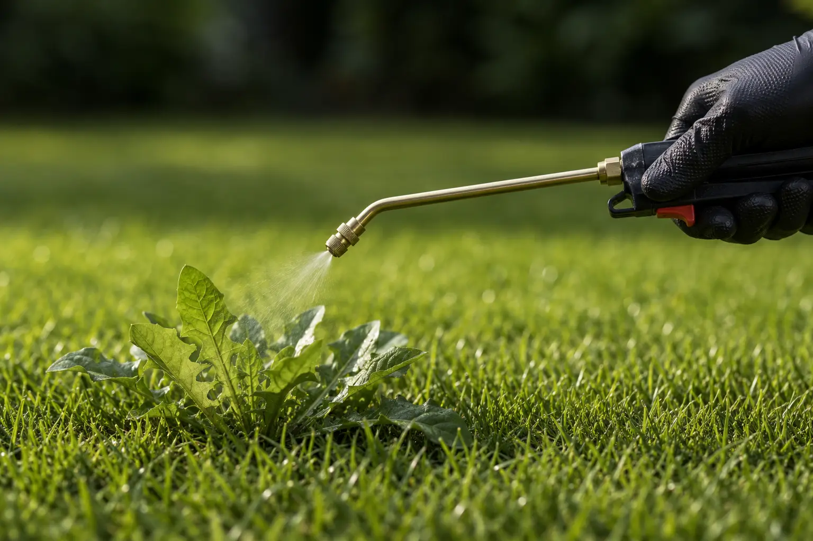

Residential & Commercial · Weed Control
Mowing and pulling clear the top growth for a week or two, then the roots push through again. We treat the plant from the leaf down to the root, and stop new growth from germinating in the first place — safe for kids and pets.

Why mowing and pulling aren't enough
Most weeds spread through extensive root systems or underground rhizomes, and the soil around them holds a seed bank that can lie dormant for seasons before germinating after rain. Mowing or a contact spray burns off the visible leaf but leaves the root network intact, so regrowth appears within weeks — and hand-pulling can actually make it worse, since a fragmented rhizome left behind often sprouts as several new plants instead of one. Our approach uses systemic herbicide that the plant absorbs through its leaves and carries down into the root system, paired with a pre-emergent barrier treatment in cracks, beds and driveways so new seeds can't establish in the first place.
Worth checking for
Clearing a patch and seeing it return within a fortnight usually means the root system is still intact below the surface.
Cracks and joints hold moisture and loose soil, giving roots and windborne seeds an easy place to establish and spread.
Dense, low-spreading growth choking out grass or garden plants usually points to an established rhizome network rather than isolated seedlings.
A flush of new growth in bare soil beds after rainfall is a sign of an active seed bank waiting for the right conditions.
How we treat it
We identify the weed species present — broadleaf, grassy, or woody — since each responds best to a different treatment approach.
Herbicide is applied directly to active growth, absorbed through the leaves and translocated down into the root system to kill the plant at the source.
A residual barrier applied to cracks, beds and driveway joints stops dormant seeds from germinating after the existing growth dies back.
You get a clear report on what was found, what was used, and simple habits that keep new growth from establishing.
Good to know
Yes — we use products and application methods that are safe for occupied gardens with children and pets, and we'll always tell you if any brief precaution is needed for a specific product or bed.
Visible die-back typically starts within 1–2 weeks as the herbicide moves into the root system, with full clearance of treated areas usually within 3–4 weeks.
Often yes for an isolated patch. For recurring growth — common in gardens near open land, verges, or vacant plots — our quarterly maintenance plan keeps new seedlings from re-establishing season after season.
No need to mow right beforehand — in fact, leaving the leaf growth intact gives the systemic treatment more surface area to be absorbed, so it can work its way down to the roots more effectively.
While you're at it
Dealing with more than one pest at once is common — ask about a combined visit.
Where we operate
We treat weed growth across Johannesburg and Pretoria. A few areas we cover regularly:
Message us on WhatsApp with a quick description of what you're seeing, or request a free quote and we'll get back to you within one business day.